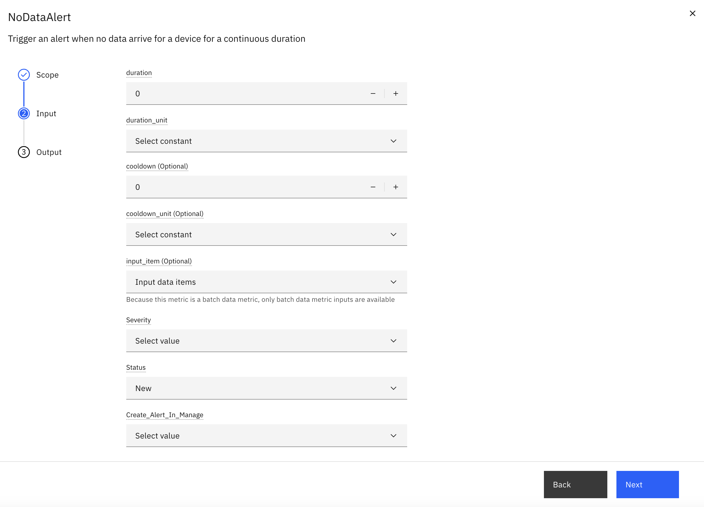

NoData Alerts
Objective
In this exercise, you will configure a NoData Alert to detect when devices stop sending data for a specified duration. This alert type is essential for identifying device offline conditions, connectivity issues, and sensor failures.
What is a NoData Alert?
A NoData Alert triggers when data not arrive from a device for a continuous duration D. Unlike occurrence-based alerts that count condition breaches, NoData Alerts are time-gap based and detect silent periods in data streams.
Use Cases
- Device Offline Detection
- Sensor Heartbeat Monitoring
- Connectivity Outage
Configuration Parameters
| Parameter | Type | Required | Default | Description |
|---|---|---|---|---|
| duration | int | Yes | - | Minimum time period without data before the first alert is triggered |
| duration_unit | int | Yes | - | Duration threshold in minutes/hours/days |
| cooldown | int | No | - | Minimum time between consecutive alerts |
| cooldown_unit | String | No | Minute | Cooldown Unit in minutes/hours/days |
| input_item | String | No | None | Optional specific data item to monitor |
| create_alert_in_manage | boolean | Yes | - | Create Alert in Manage |
UI Configuration

Configuration Steps
Step 1: Configure NoData Alert
- Navigate to
- Select your device type and click Edit
- Navigate to the Calculated Metrics tab
- Click Create Calculated Metric
- Select NoData Alert from the KPI catalog
Step 2: Set Alert Parameters
Configure the following parameters:
Duration (D):
Example: 5 hours
- How long to wait before triggering an alert
- Consider normal data transmission intervals
- Account for expected maintenance windows
Cooldown Period:
Example: 1 day
- Prevents alert spam during prolonged outages
Data Item (Optional):
Example: temperature_sensor
- Monitor specific data item instead of all device data
Alert Actions:
- select alert severity (Critical, High, Medium, Low)
- select alert creation status(New, Resolved, Acknowledge, validated)
- select create alert in manage(True, False)
Example Timeline
Scenario 1: Device Stops Sending Data
When no specific data item is configured, the alert monitors all device data.
Configuration: - Duration (D) = 2 hours - Cooldown = 3 hours - Data Item = None (monitors all metrics)
| Time | Pressure | Temperature | Event |
|---|---|---|---|
| 12:00 | ✓ | ✓ | Data received |
| 12:04 | ✓ | ✓ | Data received |
| 12:05 | ✓ | ✓ | Data received |
| 14:05 | - | - | Alert fires (12:05 to 14:05 → 2 hours, no data for ALL metrics) |
| 17:05 | - | - | Alert fires (cooldown expired, still no data) |
Key Points: - Alert triggers when data not arrives for all metric - Both Pressure and Temperature must be missing - If either metric sends data, the gap resets
Scenario 2: Monitoring Specific Data Item
When a specific data item is configured, the alert monitors only that data item.
Configuration: - Duration (D) = 2 hours - Cooldown = 3 hours - Data Item = Temperature
| Time | Pressure | Temperature | Event |
|---|---|---|---|
| 12:00 | ✓ | ✓ | Data received |
| 12:04 | ✓ | ✓ | Data received |
| 12:05 | ✓ | ✓ | Data received |
| 13:00 | ✓ | - | Pressure continues, Temperature stops |
| 14:05 | ✓ | - | Alert fires (12:05 to 14:05 → 2 hours, no Temperature data) |
| 14:30 | ✓ | - | No new alert (cooldown active) |
| 17:05 | ✓ | - | Alert fires (cooldown expired, still no Temperature) |
Key Points: - Alert triggers when Temperature data is missing for 2 hours - Only Temperature gaps are monitored
Backtrack Support
NoData Alerts support backtracking to handle historical data scenarios and resolve alerts retroactively.
Use Case: Resolving Alerts After Data Upload
Scenario: 1. Device experiences an outage and stops sending data 2. NoData Alert is triggered (Status: New) 3. Missing data is uploaded via CSV file upload 4. Pipeline runs in backtrack mode 5. Alert status automatically updates from New to Resolved
How It Works
When you upload historical data that fills a data gap:
- Upload Missing Data: Use CSV file upload to add data for the missing time period
- Run Pipeline in Backtrack: Execute the pipeline in backtrack mode for the affected time range
- Automatic Resolution: The system detects that data now exists for the previously missing period
- Alert Status Update: Alert status changes from New to Resolved
Example Timeline
| Time | Event | Alert Status |
|---|---|---|
| 12:00 | Device stops sending data | - |
| 14:00 | NoData Alert fires (2-hour gap) | New |
| 15:00 | Upload CSV with data for 12:00-14:00 | New |
| 15:05 | Run pipeline in backtrack mode | Resolved |
Benefits
- Retroactive Resolution: Alerts are automatically resolved when missing data is provided
- Accurate History: Alert records reflect the actual data availability
- No Manual Intervention: No need to manually close alerts after data upload
Summary
You have learned how to:
✅ Understand NoData Alert concepts and use cases
✅ Configure duration and cooldown parameters
✅ Set up alerts for device offline detection
✅ Handle backtrack scenarios
Next Steps
Proceed to Exercise 2: Alerts by Occurrences Count to learn about frequency-based alerting.
Congratulations! You have successfully configured NoData Alerts for proactive device monitoring.